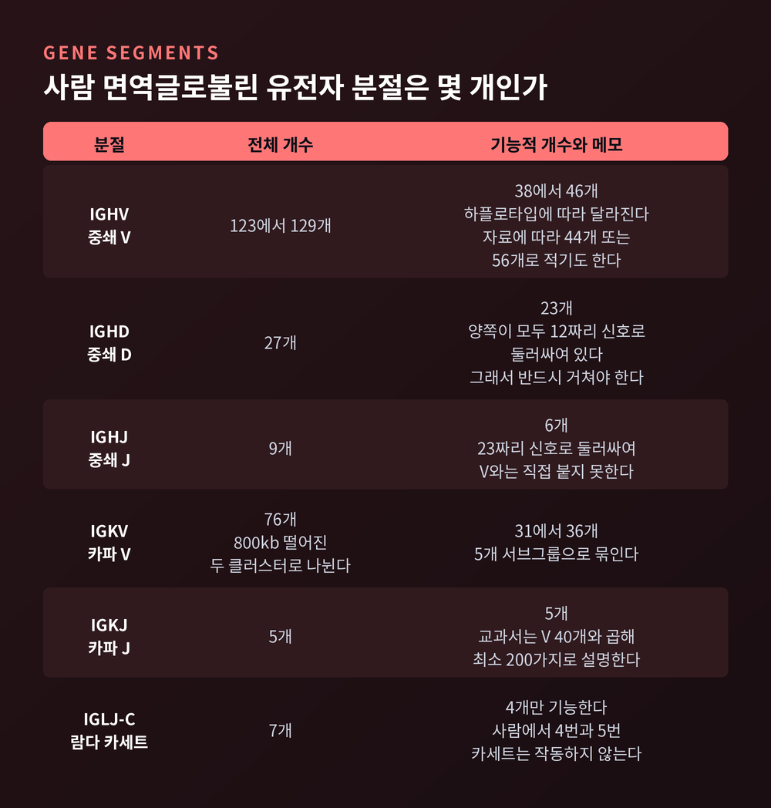
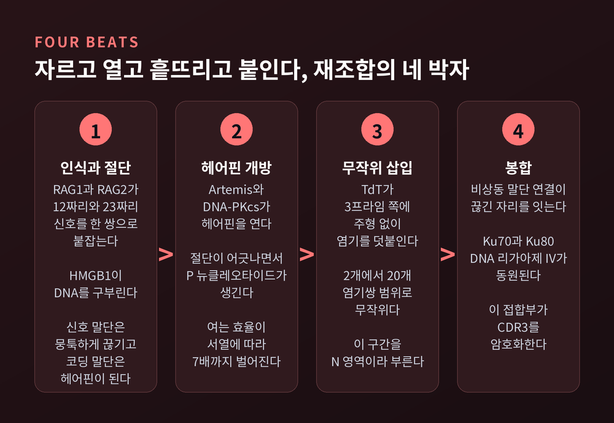
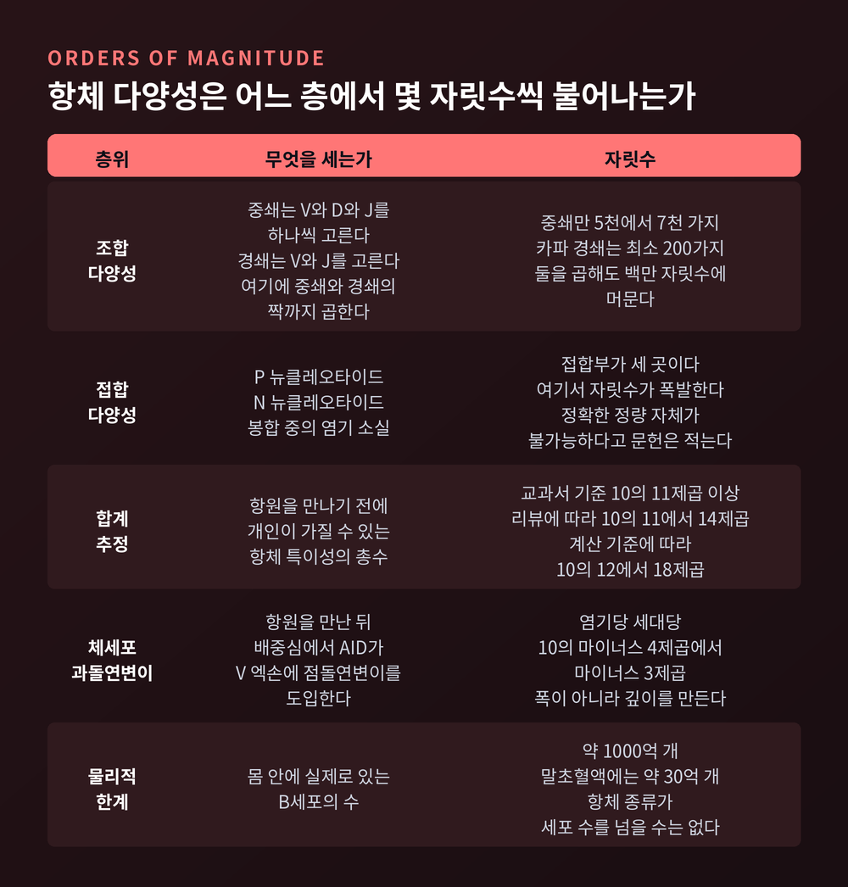
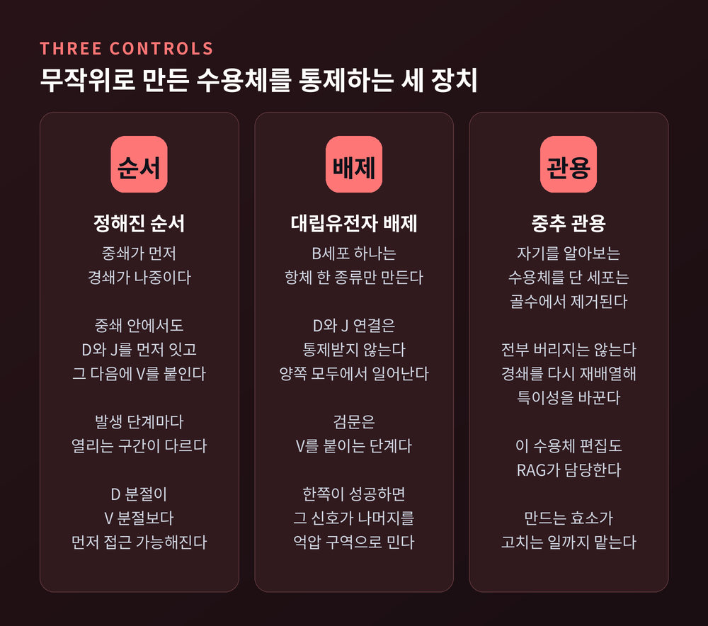
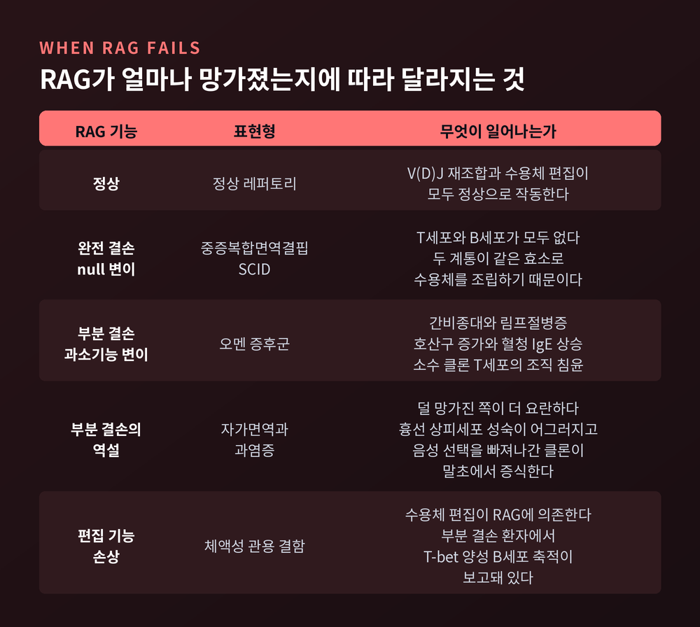

V(D)J 재조합 원리 — 유전자 수백 개가 항체 1000억 종을 만든다
이번 글에서는 V(D)J 재조합을 정리해 보겠습니다.
몸이 처음 보는 병원체까지 알아보는 항체를 미리 갖춰두는 방식에 관한 이야기입니다.
의학적 조언이 아니라 원리 설명이라는 점을 먼저 밝혀 둡니다.
먼저 세 줄로 요약합니다.
- 항체 유전자는 통째로 물려받는 것이 아니라, B세포가 만들어지는 동안 분절 단위로 잘라 붙여 조립됩니다.
- 조합만으로는 백만 가지 언저리에 그칩니다. 자릿수를 폭발시키는 쪽은 이어 붙이는 자리의 부정확함입니다.
- 무작위로 만든 수용체는 위험합니다. 그래서 순서, 대립유전자 배제, 관용 검사라는 통제 장치가 함께 붙어 있습니다.

유전자 10만 개로 항체 10억 개를 설명할 수 없었다
1987년 노벨생리의학상 보도자료는 당시의 난제를 이렇게 정리합니다.
사람 유전체에 든 유전자는 10만 개 남짓으로 여겨졌습니다.
그런데 몸이 만들어내는 항체는 10억 가지쯤으로 보였습니다.
유전자 하나가 단백질 하나를 만든다는 원칙으로는 셈이 맞지 않습니다.
부족한 정도가 아니라 네 자릿수가 비었습니다.
스스무 도네가와가 이 간극을 메웠습니다.
1976년 연구에서, 배아세포가 항체를 만드는 B림프구로 분화할 때 DNA 자체가 재배치된다는 사실을 실험으로 보였습니다.
항체 다양성은 유전자를 많이 가지고 있어서 생기는 것이 아니었습니다.
체세포 안에서 유전자가 다시 배열되기 때문에 생기는 것이었습니다.
그는 이 발견으로 1987년 노벨생리의학상을 단독 수상했습니다. 당시 소속은 MIT였습니다.
수상 사유는 간결합니다. "항체 다양성 생성의 유전학적 원리 발견."
항체에서 변하는 부분은 어디인가
구조부터 짚고 가겠습니다.
IgG 항체는 중쇄 두 개와 경쇄 두 개가 이황화 결합으로 묶인 형태입니다.
중쇄는 가변 도메인 하나에 불변 도메인 셋을 달고 있습니다. 경쇄는 가변 도메인 하나에 불변 도메인 하나입니다.
불변부는 항체가 무엇을 할지를 정합니다. 가변부는 무엇을 알아볼지를 정합니다.
재조합이 손대는 곳은 오직 가변부입니다.
중쇄와 경쇄의 가변 도메인이 맞물리면 항원 결합 부위가 만들어집니다.
여기서 항원과 직접 닿는 고리가 여섯 개 있습니다. 상보성 결정 부위, 줄여서 CDR이라 부릅니다.
중쇄에 셋, 경쇄에 셋입니다.
이 가운데 CDR3의 변이가 압도적으로 큽니다.
사람 중쇄 CDR3의 평균 길이는 14.8개 아미노산입니다. 14개와 15개가 가장 흔합니다.
전체 서열의 절반 이상이 11개에서 14개 사이에 몰립니다.
그러나 짧게는 2개, 길게는 26개까지 나타납니다. 데이터베이스에는 36개짜리 극단값도 한 건 등록돼 있습니다.
길이 자체가 흔들린다는 점을 기억해 두시면 좋겠습니다. 뒤에서 그 이유가 나옵니다.
부품 상자에는 무엇이 들어 있나
이제 재료를 셉니다.
중쇄 자리에는 V, D, J 세 종류의 분절이 흩어져 있습니다. 경쇄 자리에는 V와 J만 있습니다.
숫자는 자료마다 다릅니다. 이 점을 먼저 말씀드립니다.
IMGT 기준으로 기능적 IGHV는 38개에서 46개입니다. 하플로타입에 따라 달라지기 때문입니다.
위키백과는 44개로 적고, 다른 자료는 56개로 적습니다.
분류 기준과 데이터베이스 갱신 시점이 다른 탓입니다. 하나로 못박기 어렵습니다.
기능적 IGHD는 23개, IGHJ는 6개입니다.
전체 유전자 수로 따지면 IGHV가 123개에서 129개, IGHD가 27개, IGHJ가 9개입니다.
상당수가 쓰이지 않는 위유전자라는 뜻입니다.
카파 경쇄 자리에는 IGKV가 전부 76개 있고, 그중 기능적인 것은 31개에서 36개입니다. IGKJ는 5개입니다.
람다 경쇄 쪽은 사정이 더 복잡합니다. J-C 카세트 일곱 개 중 네 개만 기능합니다.

12/23 규칙 — 순서를 강제하는 장치
분절을 아무렇게나 이어 붙이면 안 됩니다. V가 J에 바로 붙어버리면 D가 통째로 빠집니다.
이 순서를 강제하는 것이 재조합 신호 서열입니다. 영어 약자로 RSS라고 씁니다.
RSS는 세 부분으로 되어 있습니다.
보존된 7량체, 길이가 정해진 스페이서, 그리고 보존된 9량체입니다.
대표 서열은 7량체가 CACAGTG, 9량체가 ACAAAAACC입니다.
핵심은 스페이서입니다. 길이가 12염기쌍 아니면 23염기쌍 둘 중 하나입니다.
그리고 재조합효소는 12짜리 하나와 23짜리 하나가 짝을 이룰 때만 작동합니다.
같은 길이끼리는 거의 붙지 못합니다. 이것을 12/23 규칙이라 부릅니다.
중쇄 자리의 배치를 보면 설계 의도가 드러납니다.
V와 J는 양쪽 모두 23짜리로 둘러싸여 있습니다. D는 양쪽 모두 12짜리로 둘러싸여 있습니다.
V와 J는 서로 같은 길이라 붙을 수 없습니다. 반드시 D를 거쳐야 합니다.
1996년 실험이 이 규칙의 위치를 밝혔습니다.
RAG1과 RAG2 두 단백질만 있으면 절단이 일어납니다. 다만 금속 이온에 따라 결과가 달라집니다.
망간 조건에서는 신호 서열 하나만 있어도 잘립니다. 그러나 생리적 조건인 마그네슘에서는 신호 서열 두 개가 필요하고,
정규 12/23 짝일 때 가장 잘 잘립니다.
규칙이 세포 어딘가의 감시 장치에 있는 것이 아니라, 효소 단백질 자체에 새겨져 있다는 뜻입니다.
2015년 저온전자현미경 구조는 그 다음 층을 보여줬습니다.
HMGB1이라는 단백질이 RSS를 구부려 주고, 그때 RAG1의 9량체 결합 도메인 이량체가 기울어지며 비대칭이 생깁니다.
그 비대칭이 12과 23을 구분하는 물리적 근거입니다. 촉매 반응은 두 금속이온 기전을 씁니다.
자르고, 열고, 흩뜨리고, 붙인다
재조합의 실제 진행은 네 박자입니다.
먼저 RAG 복합체가 RSS와 코딩 분절의 경계를 정확히 자릅니다.
그런데 절단 산물이 좌우 대칭이 아닙니다.
신호 쪽 말단은 뭉툭하게 끊깁니다. 반면 코딩 쪽 말단은 공유결합으로 봉해진 헤어핀이 됩니다.
이 비대칭이 다양성의 출발점입니다. 헤어핀은 반드시 다시 열려야 하는데, 그 과정이 부정확하기 때문입니다.
헤어핀을 여는 것은 Artemis와 DNA-PKcs 복합체입니다.
Artemis의 절단은 종종 어긋납니다. 한쪽 가닥이 길고 한쪽이 짧게 남습니다.
짧은 쪽을 긴 쪽 길이에 맞춰 채우면서 생기는 염기가 P 뉴클레오타이드입니다.
헤어핀을 여는 효율 자체도 서열에 따라 약 7배까지 벌어집니다. 자르는 위치도 함께 달라집니다.
여기에 한 겹이 더 얹힙니다.
말단 디옥시뉴클레오타이딜 전달효소, 줄여서 TdT라는 효소가 잘린 말단의 3프라임 쪽에 염기를 덧붙입니다.
주형이 없습니다. 참고할 원본 없이 붙이는 것입니다. 붙는 길이는 2개에서 20개 염기쌍 사이로 무작위입니다.
이렇게 생긴 구간을 N 영역이라 부릅니다.
마지막으로 비상동 말단 연결이라는 수선 경로가 끊긴 자리를 이어 붙입니다.
Ku70과 Ku80, DNA 리가아제 IV 같은 인자들이 동원됩니다.
이 봉합에서도 염기의 소실과 추가가 함께 일어납니다. 정확한 복구가 아닙니다.
그리고 바로 이 V-D-J 접합부가 CDR3를 암호화합니다.
앞에서 CDR3의 길이가 2개에서 26개까지 흔들린다고 했습니다. 이유가 여기 있었습니다.

자릿수를 직접 세어보면
이제 계산입니다. 층위를 나눠서 봐야 합니다.
첫째 층은 조합 다양성입니다. 분절을 골라 짝짓는 경우의 수입니다.
중쇄는 V, D, J를 각각 하나씩 고릅니다. 기능적 숫자로 곱하면 5,000가지에서 7,000가지 정도 나옵니다.
경쇄는 더 적습니다. Janeway 교과서는 카파 경쇄의 경우 V 40개와 J 5개를 곱해 최소 200가지라고 명시합니다.
중쇄와 경쇄가 짝을 이루는 경우까지 곱해도 백만 자릿수 언저리입니다.
솔직히 말하면 이것으로는 턱없이 모자랍니다.
문제 제기가 10억이었는데, 조합만으로는 백만에서 멈춥니다. 세 자릿수가 비어 있습니다.
둘째 층이 그 간극을 메웁니다. 접합 다양성입니다.
P 뉴클레오타이드, N 뉴클레오타이드, 봉합 중의 염기 소실이 겹칩니다.
접합부는 중쇄에 두 곳, 경쇄에 한 곳 있습니다. 세 자리 모두에서 독립적으로 흔들립니다.
문헌은 이 때문에 실제 레퍼토리 다양성을 정확히 정량하는 것 자체가 불가능하다고 적습니다.
셋째 층까지 더한 총량은 자료마다 다릅니다.
Janeway는 개인이 가질 수 있는 항체 특이성이 "적어도 10의 11제곱, 아마 훨씬 더 많다"고 씁니다. 1000억입니다.
다른 리뷰는 10의 11제곱에서 14제곱, 또 다른 계산은 10의 12제곱에서 18제곱을 제시합니다.
단일 숫자로 못박는 것은 문헌에 맞지 않습니다. 범위로 두는 편이 정직합니다.

무작위의 대가 — 세 겹의 통제
여기서 한 가지를 인정해야 합니다.
무작위로 수용체를 찍어내는 전략은 강력하지만 위험합니다.
자기 조직을 알아보는 수용체가 반드시 섞여 나오기 때문입니다.
그래서 통제 장치가 함께 붙어 있습니다.
첫째, 순서입니다.
중쇄가 먼저 조립되고 경쇄가 나중입니다. 중쇄 안에서도 D-J 연결이 먼저, V-DJ 연결이 나중입니다.
발생 단계마다 열리는 구간이 다르기 때문입니다. D 분절이 V 분절보다 이른 시점에 접근 가능해집니다.
둘째, 대립유전자 배제입니다.
B세포 하나는 한 종류의 항체만 만들어야 합니다. 그래야 특이성이 유지됩니다.
흥미롭게도 D-J 연결은 통제받지 않고 양쪽 대립유전자 모두에서 일어납니다.
검문이 걸리는 지점은 V를 붙이는 단계입니다.
한쪽에서 성공하면 전구 B세포 수용체가 만들어지고, 그 신호가 나머지 한쪽을 억압성 이질염색질 구역으로 밀어 넣습니다.
물리적으로 격리해 더 이상의 재배열을 막는 방식입니다.
셋째, 관용 검사입니다.
자기 반응성 수용체를 단 세포는 골수에서 제거됩니다. 음성 선택입니다.
다만 전부 버리지는 않습니다. 경쇄 자리를 다시 재배열해 특이성을 바꾸는 구제 경로가 있습니다. 수용체 편집이라 부릅니다.
그런데 이 편집도 RAG1과 RAG2가 담당합니다. 만드는 효소가 고치는 일까지 맡는 셈입니다.

항원을 만난 뒤에 작동하는 것은 다른 기전입니다
자주 섞여서 설명되는 부분이라 따로 떼어 두겠습니다.
체세포 과돌연변이와 클래스 전환은 V(D)J 재조합이 아닙니다.
V(D)J 재조합은 항원을 만나기 전에, 골수와 흉선에서 끝납니다. 효소는 RAG입니다.
반면 체세포 과돌연변이와 클래스 전환은 항원을 만난 후에, 배중심에서 일어납니다.
효소도 다릅니다. AID, 곧 활성화 유도 시티딘 탈아미노효소가 맡습니다.
AID는 면역글로불린 유전자에서 디옥시시티딘을 디옥시유리딘으로 바꿉니다.
이 변화가 돌연변이 유발성 DNA 수선을 부릅니다.
돌연변이 도입 빈도는 염기당 세대당 10의 마이너스 4제곱에서 마이너스 3제곱 수준입니다.
일반 유전체의 돌연변이율과는 비교가 되지 않습니다.
이렇게 다양해진 B세포들이 제한된 양의 항원을 두고 경쟁합니다. 잘 붙는 쪽이 선택됩니다. 친화도 성숙입니다.
정리하면 이렇습니다.
V(D)J 재조합은 레퍼토리의 폭을 만듭니다. 과돌연변이와 클래스 전환은 레퍼토리의 깊이를 만듭니다.
T세포 수용체와 비교해 보면 차이가 선명해집니다.
T세포도 똑같은 RAG 기구, 똑같은 RSS, 똑같은 12/23 규칙을 씁니다. 기계는 공유하고 부품만 다릅니다.
베타 사슬은 기능적 V 48개, D 2개, J 13개를 갖습니다. 알파 사슬은 아예 D가 없고 V와 J만 잇습니다.
다만 T세포에는 체세포 과돌연변이가 없습니다. 재조합으로 만든 수용체를 평생 그대로 씁니다.
나중에 다듬는 장치는 B세포 쪽에만 있는 셈입니다.
기계가 고장 나면 무슨 일이 생기나
RAG의 역할은 임상에서 역으로 확인됩니다.
RAG1이나 RAG2의 양쪽 대립유전자가 완전히 망가지면 중증복합면역결핍이 생깁니다.
T세포와 B세포가 모두 없습니다. 두 계통 모두 같은 효소로 수용체를 조립하기 때문입니다.
잔존 활성이 조금 남은 과소기능성 변이는 오멘 증후군으로 나타납니다.
간비종대, 림프절병증, 호산구 증가, 혈청 IgE 상승, 그리고 소수 클론 T세포의 조직 침윤이 특징입니다.
여기에 역설이 있습니다.
덜 망가진 쪽이 더 요란한 병을 만듭니다.
완전 결손은 세포가 아예 생기지 않습니다. 부분 결손은 잘못 만들어진 세포가 생깁니다.
흉선 상피세포 성숙이 어그러지면서 음성 선택을 빠져나간 클론이 말초에서 증식하고, 대규모 자가면역 반응으로 이어집니다.
수용체 편집이 RAG 의존적이라는 점도 여기서 값을 치릅니다.
부분 RAG 결손 환자에서는 중추 B세포 관용 자체가 흔들립니다. 실제로 T-bet 양성 B세포 축적과 체액성 관용 결함이 보고돼 있습니다.
다시 강조하지만 이 단락은 원리 설명입니다. 진단이나 치료 판단은 전문의의 몫입니다.

이론값과 실측값 사이
마지막으로 숫자의 성격을 구분해 두겠습니다.
이론적 레퍼토리는 1000억 이상입니다. 그런데 사람 몸 전체의 B세포 수도 대략 1000억 개입니다.
동시에 존재할 수 있는 항체 종류는 세포 수를 넘을 수 없습니다.
이론값은 가능성의 크기이지, 지금 몸 안에 있는 항체의 개수가 아닙니다.
건강한 사람의 말초혈액 B세포는 약 30억 개입니다. 잠재 레퍼토리의 3퍼센트에도 못 미칩니다.
채혈 한 번으로 전체를 볼 수 없는 이유입니다.
그래서 NGS 레퍼토리 시퀀싱이 쓰입니다.
CDR3 서열이 세포마다 다르다는 점을 이용해, 그 서열을 바코드처럼 삼아 개별 B세포를 추적하는 방법입니다.
백신 접종 후의 반응, 감염과 염증, 면역 매개 질환에서의 B세포 거동을 읽어냅니다.
단일세포 기법으로 중쇄와 경쇄의 짝을 보존한 채 항원 반응성 항체를 대량 발굴하는 단계까지 왔습니다.
한 가지 덧붙이자면, RAG의 출신이 흥미롭습니다.
RAG1의 촉매 코어와 RSS는 Transib 계열 DNA 트랜스포존에서 유래한 것으로 분석됩니다.
약 5억 년 전 턱이 있는 척추동물의 공통 조상에서 일어난 사건으로 추정합니다.
활유어에서는 RAG 상동체가 여전히 활성 트랜스포존 안에 들어 있는 것이 확인됐습니다.
다만 "RAG 트랜스포존이 후구동물 진화 내내 활동했다"는 견해도 있어, 연대를 한 점으로 특정하기는 어렵습니다.
끝으로 한 마디만 더 드리겠습니다.
예전에는 몸이 항체 설계도를 미리 다 갖고 태어난다고 여겼습니다.
지금은 아니라는 것을 압니다. 몸은 설계도가 아니라 조립 규칙을 물려줍니다.
부품은 수백 개뿐입니다. 규칙은 단순합니다. 12와 23을 짝지어라, D를 건너뛰지 마라, 한 번에 하나만 써라.
그 위에 이어 붙이는 자리의 부정확함을 얹었더니 자릿수가 열한 개까지 벌어졌습니다.
정확함이 아니라 적당한 부정확함이 다양성을 만들었다는 점 — 저는 이 대목이 가장 인상적입니다.
그 대가로 자기를 공격할 위험을 떠안았고, 그래서 관용 검사라는 비용을 함께 치릅니다.
아직 모든 조절 기전이 밝혀진 것은 아닙니다. 대립유전자 배제의 정확한 분자 기전은 여전히 논쟁 중입니다.
몸이 왜 완벽한 설계도 대신 어설픈 조립을 택했느냐고 물으신다면,
완벽한 설계도로는 처음 보는 적을 미리 그려둘 수 없었기 때문이라고 답하겠습니다.